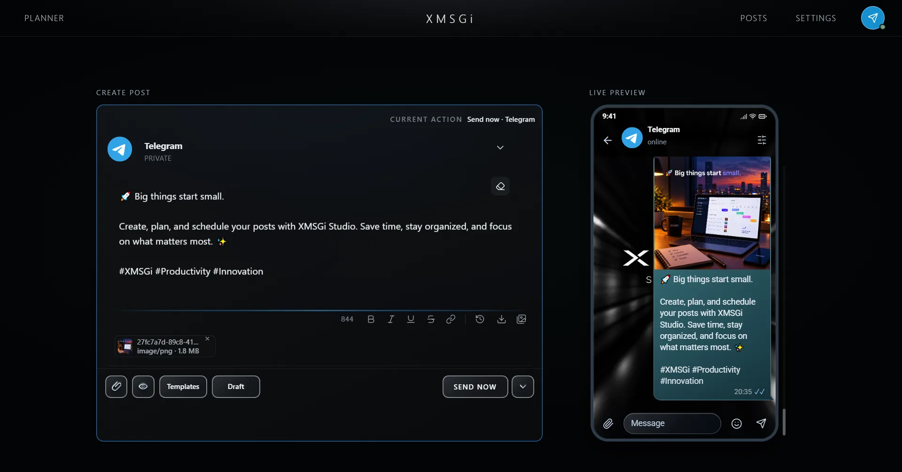
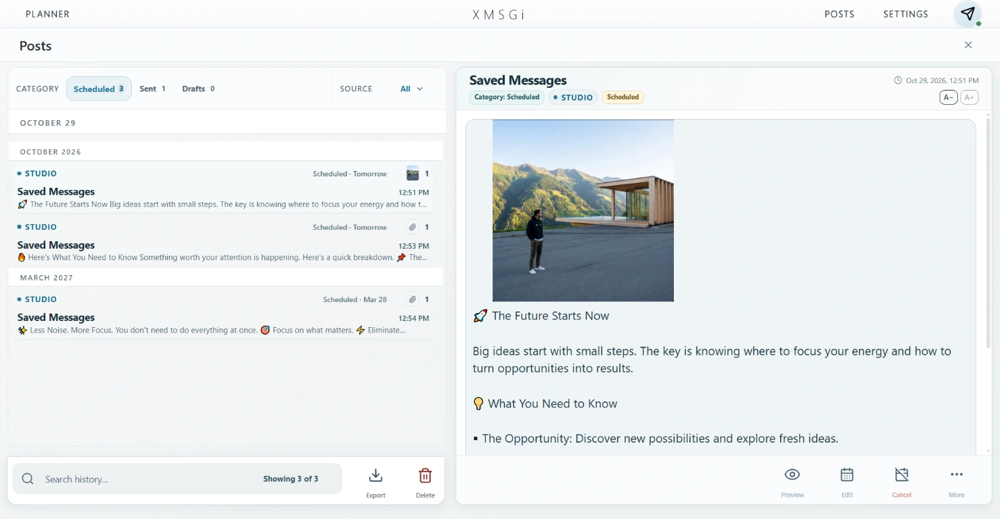

✍️
Сохраняйте идеи в одном месте
Держите заметки, темы и подготовленные тексты рядом с рабочим пространством и не теряйте контент-план.
XMSGi Studio помогает держать контент-план под контролем: сохранять идеи, готовить посты заранее, раскладывать публикации по датам и запускать их по расписанию — от вашего личного Telegram-аккаунта.
Тексты и идеи часто теряются в заметках, переписке или в голове. Если канал живёт регулярно, подготовки заранее экономят время и помогают не сбиваться из-за спешки.
Держите заметки, темы и подготовленные тексты рядом с рабочим пространством и не теряйте контент-план.
Планируйте посты на нужную дату, чтобы Telegram-канал не зависел от импровизации в последний момент.
Анализируйте активность отправок и понимаете, сколько публикаций реально помещается в вашу неделю.
Приложение поддерживает рабочий поток, который подходит для регулярного ведения канала и публикаций без ботов.
Создавайте текст, добавляйте контент-идеи и сохраняйте их как рабочие материалы.
Собирайте готовый текст, форматируйте его и проверяйте превью перед отправкой.
Назначайте точное время и дату. Для повторяющихся публикаций есть режимы повтора.
Проверяйте очередь, статус публикаций и уже sent-сообщения в одном месте.


В регулярном ведении Telegram важно не только писать, но и поддерживать ритм. XMSGi Studio помогает не держать всё в голове и не пропускать публикации, если вы заняты другими задачами.
Что в фокусе:Сохраняйте подготовленные тексты, возвращайтесь к ним позже и держите всё в одном рабочем пространстве.
Планируйте один пост или серию сообщений на конкретную дату и время без постоянного контроля.
Отправки можно повторять по выбранным дням или периодам, что полезно для регулярного контента.
Смотрите, что ушло, что ждёт отправки, а что находится в черновиках — в общей панели истории.
Приложение показывает активность по подтверждённым отправкам, чтобы оценивать рабочий ритм.
Большая часть данных остаётся на устройстве, а отправка идёт через ваш личный Telegram-аккаунт.
Если вы ведёте канал, группу или несколько аккаунтов, XMSGi Studio поможет держать публикации в порядке, не теряя текст и не забывая про важные даты.